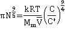

Osmotic flow countered by the osmotic pressure
Osmotic pressure is the tendency of solvent molecules to move toward lower solvent activity, and it plays a central role in biology.
 Mole fraction : molarity, molality, % w/w and % w/v
Mole fraction : molarity, molality, % w/w and % w/v
 Overview of colligative properties
Overview of colligative properties
 Diffusion
Diffusion
 Brownian motion
Brownian motion
 Self-generation of osmotic pressure at interfaces
Self-generation of osmotic pressure at interfaces
 Reverse osmosis
Reverse osmosis
 Osmotic stress
Osmotic stress
 Osmotic pressure
Osmotic pressure
 Osmotic flux
Osmotic flux
 Relation of osmotic pressure to vapor pressure
lowering
Relation of osmotic pressure to vapor pressure
lowering
 The osmotic pressure of polymers
The osmotic pressure of polymers
 Osmotic potential
Osmotic potential
"...the cause of osmosis is the difference that exists between the free energy or activity
of the solvent in the pure state and in solution..."
Alexander Finlay 'Osmotic Pressure' 1919
When pure liquid water is separated by a membrane, permeable to water but not solute, from a solution containing a non-volatile solute, water will pass from the pure water side until sufficient extra pressure (Π) is caused or applied to the solution side [1872]. Water moves from high to low water activity due to osmosis and, if allowed, would equalize the water activity on both sides of the membrane. This osmotically-linked flow has been shown to equal the rate if a similar but hydrostatic pressure (in the opposite direction) was imposed. The pressure needed to stop the osmotic flow is the osmotic pressure (see below right). At this equilibrium, the vapor pressures of the solution and the pure water are identical (see below). Note that osmotic pressure is an equilibrium thermodynamic propertya and gives no information concerning the rate of passage of the water, which depends primarily on the properties of the membrane [1873]. The osmotic pressure is the most biologically-important colligative property and correlates to other colligative properties [2749]. Solutes dissolved in a solvent lower both the chemical potential and the activity of the solvent in the solution relative to the chemical potential or activity of the pure solvent. Osmotic pressure, vapor pressure lowering, boiling point elevation, and freezing point depression, are all measures of the same chemical potential of the solvent, which does not have to be water. Either freezing point depression or osmotic pressure can be used to calculate the other.
The net movement of water towards solutions with lower
water activity, generating osmotic pressure

There is often confusion in the literature between the thermo-dynamic rationale and the kinetic process of osmosis. j The thermodynamics of the process (e.g., the colligative property) only describes the tendency for the process to occur but does not describe the mechanism or the rate of water flow in an osmotic process, apart from its (impending) direction. As such, all solutions possess the potential for osmotic pressure (but no actual osmotic pressure) if not adjacent to a semipermeable membrane. Also, there is no distension of the semipermeable membrane under osmotic pressure, but there may well be distension under hydrostatic pressure; the osmotic pressure only apparently acts around the pores of the semipermeable membrane, whereas the hydrostatic pressure acts throughout the system. In this way, osmotic pressure m differs from hydrostatic pressure.
Osmotic pressure is determined at thermodynamic equilibrium in an osmometer similar to the diagram (see above right) with no net flow through the membrane. In line with the other colligative properties (boiling point raising, freezing point lowering) as determined, it is a pressure difference, not absolute pressure. It cannot be determined by any kinetic process. Below right is shown the U-tube configuration whereby water flows from the pure water arm to the solution arm until the excess pressure on the solution in the right-hand arm (ρ ˣ g ˣ h) is balanced by the osmotic pressure.
As it takes more energy to remove an amount of water from a volume of low activity water than to remove the same amount of water from the same volume of high activity water, water molecules leaving the lower-water-activity compartment will require more energy as they cause the formation of a localized even lower activity water in their wake. Therefore, only higher energy water molecules can leave this compartment; necessarily a smaller amount than travel in the opposite direction. Note that the difference in activity may depend on the difference in the concentration of dissolved molecules and ions as discussed for other colligative properties or may be due to other causes, such as surface interactions. The measured water flux is often much smaller than the theoretical water flux due to concentration polarization at the membrane surface and the membrane resistance, together with an allowance for leakage through the membrane (the osmotic reflection coefficient (σ) [3088]).
At equilibrium, the water's chemical potential (μ) must be the same on both sides of the semipermeable membrane.c
(1)
=
The effect of the solute may be included as for Raoult's law
see below d (2)
= + RTLn(xw)
where xw is the mole fraction of the ‘free’ water (0 < xw < 1). b xw = 1 - xs
The change in chemical potential with pressure may be included.
(3)
= +
Combining equations 1, 2, and 3 and assuming the molar volume of water (Vm, m3 mol−1 ) varies little within the likely pressure range.
= + + RTLn(xw)
Using equation 1
(4 ) l
-RTLn(xw) = = Π Vm
[250] (5)
Π Vm = -RTLn(1-xs)
The piezoscopic constant (kp = R/Vm).
When xs is low, the following approximation is valid k
(6)
Ln(1 - xs) = - xs
Hence,
ΠVm = xsRT
(8)
At low xs,
xs = ns/nw
where ns is the number of moles of solute and nw is the number of moles of water.
Given the volume of water (V),
V = nw ˣ Vm
The molar concentration of the solute (Ms mol ˣ m−3) is
Ms = ns/V = xsnw/nwVm = xs/Vm
the van't Hoff equation (9) f' g
Π = MsRT
or Π = ρNkBT where ρN is the number density of particles (n/V)
Note that Ms is related to the molarity and not the molality used to describe the other colligative properties. If the concentration of glucose is 1 M at 20 °C, then the osmotic pressure (Π) is 1 ˣ 1000 (mol ˣ m−3) ˣ 8.314 (Pa ˣ m3 ˣ mol−1 ˣ K−1) ˣ 298 (K) = 2.478 MPa (~ 25 atm). Also, note that the osmotic pressure is related to the thermal energy kBT as is the diffusivity.
Given that the water activity is different on each side of the membrane (aA < aB), from equation 5
Π = (RT/Vm) Ln(aB/aA)
The osmotic behavior of glucose solutions
Shown opposite is the osmotic behavior of glucose solutions [4102]. e The lower blue line follows the 'ideal' colligative equation, Π = MsRT. The thick red line follows the osmotic pressure as calculated from the experimental freezing point data [70]. The middle green line shows the osmotic pressure calculated from the 'ideal' colligative equation, Π = MsRT, but correcting the concentration errors made by assuming Ln(1 - xs) = - xs and xs = ns/nw (but not the error in the molar volume of water). This is also the line given by Morse and Frazer's equation [2749]
Π = (n/V')RT
that avoids the approximation; where V’ is the volume of pure solvent in which n moles of solute are dissolved. The dotted black line is the best fit to the equation,
that is a commonly used form of approximation [1104], where the experimentally-determined empirical virial coefficient is A = 0.2 M−1 in this case, with most of the 'A' parameter due to the approximations used and not due to non-ideality. Further empirical virial coefficients may be used at higher concentrations;Π = RT(Ms+A1Ms2+A2Ms3+A3Ms4). They are determined empirically by fitting them to the experimental osmotic pressure data and do not have any physical meaning. The thin red line is described below. Note that the ideal colligative equation holds well at low osmotic pressures, up to about five atmospheres pressure (0.5 MPa).
Osmotic coefficients of bromides and acetates
Experimental osmotic pressures (Π ) may be compared with the 'ideally expected' osmotic pressure (Π 0; as from Raoult's law) by the osmotic coefficient (ϕ); ϕ =Π /Π0. The osmotic coefficients of salts vary in a complex ion-specific manner (as ion activities, [2225], see Hofmeister series). For example, at a given concentration, the osmotic coefficients of bromide and iodide salts decreases in the sequence: Li+ > Na+ > K+ > Rb+ > Cs+ (see left), whereas the osmotic coefficients of acetate or fluoride salts decreases in the opposite sequence: Cs+ > Rb+ > K+ > Na+ > Li+ [2224].
Osmotic coefficient of NaCl, broken down
from [3432]
The form of the curves involves a drop in activity due to direct contact ion-pairing reducing the apparent salt concentration counteracted (see the red dashed line on the right, [3432]) by an increase in osmotic coefficients due to the binding of water by the salt and its consequential loss from the dissolving solution (see the blue dotted line on the right), so increasing the apparent concentration. The order of the salts is governed by their tendency to form direct contact ion-pair as opposed to solvent separated ion-pairs.
Osmotic pressure and simple diffusion may be treated as distinct, unrelated phenomena [2100], the first one being thermodynamic and the other kinetic. However, osmotic pressure presents the driving force (osmosis) for the movement of water from a region of high 'free' water concentration to a region of lower 'free' water concentration (for example. one with higher salt content). Such a relationship cannot exist between a thermodynamic property (osmotic pressure) and a kinetic process (rate of diffusion). However, osmosis and diffusion can both be treated using thermodynamics or kinetics. The thermodynamic argument connects osmosis with the direction of diffusion, whereas the kinetic argument connects the pressure differences with the movement of molecules. A diffusion-based theory for osmotic pressure has been described [1315], which involves several assumptions and gives the equation
where xw and xS are the mole fractions of water and solute and V is the volume of the solution (in liters) containing one liter of water. This equation contains no empirical parameters (such as 'A' above in equation 10) and gives a good fit; it is shown as the top thin dashed red line for glucose above. It is noteworthy that this equation is valid for single solutes only and includes the experimentally determined volume (V) term that varies non-linearly with concentration and depends on the size of the solute (that is, it is not a colligative equation).
Proteins may remove much of the 'free' water from inside cells, causing much intracellular water to be osmotically unresponsive. As an example, one molecule of bovine serum albumin may bind 5000-43000 molecules of water [1103]. The osmolality of blood serum is about 282 - 295 mOsm ˣ (kg water)−1, close to that of normal saline (0.90% w/v of NaCl, 308 mOsm ˣ L−1). Serum values greater than 380 mOsm ˣ (kg water)−1 or less than 240 mOsm ˣ kg water−1 may be fatal.
[Back to Top  ]
]
The water flux goes from the solution with the higher water activity (lower osmotic pressure) towards the solution with the lower water activity (higher osmotic pressure). The (net) rate of water flow depends on the relative flow rates in the opposite directions. This, in turn, will depend on the ease with which the water molecules may leave the compartments on each side of the membrane, if present (dependent on the mole fraction of 'free' (bulk) water; the water activity), and the ease with which they can pass through such a membrane. Although it is not certain that the hydraulic conductivity is identical under hydrostatic pressure (P) and osmotic pressure (Π ), the volume flow (F, L ˣ m−2 ˣ s−1) is often said to depend on the hydraulic conductivity (H, L ˣ N−1ˣ s−1) of the membrane
F = H ˣ (ΔP - ΔΠ )
where ΔP is the difference in hydrostatic pressure on the two sides of the membrane and ΔΠ is the difference in osmotic pressure between the two solutions. The net flow may be several times greater than that possible by diffusion alone, clearly indicating that it is not diffusion controlled. Where there is no difference in hydrostatic pressure but differences in the solutions' osmotic pressure, this equation reduces to,
F = H ˣ ΔΠ
The net flux will be lower than this if the membrane is leaky. Then, the following equation is sometimes used [3277],
F = (1/K) ˣ Ln(Π /Π b)
where K is related to the structural properties of the membrane (S) and solute diffusion coefficient (D),
K = S/D
[Back to Top  ]
]
An alternative definition of the osmotic pressure of a solution of uniform concentration at a given temperature is the liquid pressure under which the internal vapor pressure of such solution is equal to the vapor pressure of the pure solvent [2750]. The interface between liquid water and the gas phase is a form of semipermeable membrane, with water molecules able to pass through (by evaporation and condensation) but non-volatile solutes held within the liquid phase. Therefore, it is unsurprising that the osmotic pressure should be related to the lowering of vapor pressure. The relationship is
V ˣ dP = v ˣ dp
where V is the volume of the vapor at vapor pressure P and v is the volume of the solvent in the solution at liquid pressure p [2786].
The vapor pressure lowering is given by Psolute = xwPpure liquid
Therefore, Ppure liquid - Psolute = Ppure liquid ˣ (1 - xw)
From the gas laws ( PV = RT ) and ( xs = 1 - xw ), Ppure liquid - Psolute = xsRT/Vg
where Vg is the molar volume of the solvent as a gas.
Relation of osmotic pressure to vapor pressure
Compare this equation with equation 7 above for dilute solutions
Π = xsRT/Vm
where Vm is the molar volume of the liquid solvent. For water at STP, the ratio Vg/Vm = 1232.
Therefore, Ppure liquid - Psolute =Π /1232 at STP
For example, from an experiment, the vapor pressure lowering of a 1-M solution of NaCl at 100 °C, 101,325 Pa is 3.360 kPa. From the van't Hoff equation, the osmotic pressure of this solution is
2000 ˣ 8.314 ˣ 373.15 = 6.205 MPa
At 100 °C, Vg/Vm = 1613 comparing well to the ratio of the pressures of 6205/3.36 = 1846 considering the approximations, experimental data error, and non-ideality involved.
Increasing solutes lower the water activity and the vapor pressure of a solution. The vapor pressure of a solution is increased by increasing the hydrostatic pressure on it. The osmotic pressure is the liquid pressure under which the vapor pressure of the solution is equal to the vapor pressure of the pure solvent. Both the osmotic and vapor pressures are intensive properties of solutions (do not depend on the amount of substance present in the system). As at constant temperature and composition,
ΔG = V ˣ Δp
the pressure change is related to the free energy change; that is, the amount of work that the system can perform.
[Back to Top  ]
]
At low concentrations in suitable solvents, linear polymers obey the van't Hoff equation but not at higher concentrations. For all solvents at higher concentrations, this gives rise to complex osmotic behavior with far greater than expected (from van't Hoff equation) osmotic pressures that depend on the degree of polymerization and the interaction between the chains. Polymer chains have random configurations sweeping through space and occupying much larger volumes than the molecular partial volume. The empirical equation
Π = RT(Ms+AMs2)
is often used, where A is the second virial coefficient that takes into account the interaction between two chains. Note that equation (4)
Π Vm = -RTLn(xw)
still holds throughout this section but the approximation
Ln(xw) = Ln(1 - xs) = - xs
presents a greater error and should not be used. The polymers effectively remove (screen) some of the solvent from the solution by reducing the 'free' volume of solvent available.
The osmotic pressure of pullulan from [2709]
As the concentration of the neutral polymers increases, an overlap between the chains increases with increasing contacts between the monomers, and the solution is no longer homogenous. Under these conditions, the des Cloiseaux law
Π ∝ Ms9/4
holds[2710] (see right [2709]). At low concentrations, the van't Hoff equation osmotic pressure (πvH ) is given by,
where C is polymer mass concentration, Mp is polymer molecular weight, Mm is monomer molecular weight, and N is the number of monomers in the polymer chain. As the concentration increases (often called the semidilute regime), the osmotic pressure (π) varies as [2710],
where C* is a characteristic N-dependent polymer concentration associated with the crossover between the dilute and semidilute regimes (see figure above right) and k is a structurally-specific constant. C* has been related to the partial specific volume () [2710],
giving and 
with log-log plots of the osmotic pressure against mass concentration changing from unit gradient to a gradient of 9/4 around C* (polyelectrolytes change from 9/8 gradient to a gradient of 9/4 [2710c]).
The osmotic behavior of branched polymers is complicated by the degree and order of the branching with the osmotic pressure dependent on the 'free' volume of solvent available.
When the solvent is water, there are two ways that water becomes bound (i.e., it is not 'free' water) due to the number of monomers; (a) water hidden from the bulk due to the above overlapping of the polymer chains and (b) water held firmly to the monomers by electrostatic effects and hydrogen bonds. As there is likely to be overlap between these effects, they may well be only partially or insignificantly additive. As above, the osmotic behavior of polyelectrolytes in water depends on the mass concentration relative to the concentration the molecules overlap in solution [1493]. Polyelectrolyte gels may swell to a much greater extent (e.g., hydrogels) than neutral gels due to the presence of counter-ions increasing the osmotic pressure. The elasticity of the gel counteracts this by exerting pressure on the contained water.
Shows the area that polymers cannot penetrate
A different effect occurs in suspensions of inert particles in polymer solutions. It is found that such particles do not exert any osmotic pressure. However, the solution between them (see right) exerts a negative pressure that drives the particle together and destabilizes their suspension [2786]. This negative pressure causes an outward flow of water from the high activity polymer free volume between the inert particles towards the lower activity polymer bulk solution, and consequently an attraction between these inert particles. The magnitude of this force depends on the product of the osmotic pressure and the cross-sectional area of the excluded volume. Effectively, the limited access to biomolecules between the inert particles acts as a semipermeable membrane. It should be noted that the osmotic drive does not require a material membrane to separate the two solutions [1744], provided that there are two distinct volumes (e.g., [1669]).
The same phenomenon applies to inert surfaces with narrow clefts and pores, such as the ZIF-8 material h that has great energy storage capacity (up to 30 MPa negative osmotic pressure in 2M NaCl) due to its sub-nanometric pores [2791].
Interfaces can also generate osmotic pressure without the requirement for dissolved solutes [1772, 2057].
[Back to Top  ]
]
Ψπ = - MsRT
If a living cell is surrounded by a more concentrated solution (with more negative osmotic potential), the cell (hypotonic) will tend to lose water to the surrounding environment. If the living cell is surrounded by a less concentrated solution (less negative osmotic potential), the cell (hypertonic) will tend to gain water from the surrounding environment. Water flows from higher osmotic potential to lower osmotic potential. In osmosis, water molecules move down the water potential gradient, from a high water potential to a lower water potential. Water moves from the ground surrounding trees to their upper branches in response to differences in the osmotic potential between the roots and the leaves; where water evaporates (transpiration [2434]) to increase solute concentration and decrease water potential. The maximum height that a tree (122-130 m) can grow [3842] depends on the maximum water potential (≈ 2 MPa) that can be generated in the leaves compatible with retaining the water within the leaf cells [2246].
[Back to Top  ]
]
a The inherent thermal motion of Brownian particles causes osmotic pressure that is is a pressure difference existing at equilibrium between two solutions separated by a semipermeable membrane. An osmotic pressure is a physical quantity dependent only on the solution's concentration(s) and temperature. Water moves from a solution with low osmotic pressure to a solution with high osmotic pressure due to osmosis and, if allowed, would equalize the pressure on both sides of the membrane. Osmotic pressure can also apply to gases and supercritical fluids [2100]. Osmotic pressure was first descibed by the Abbe Jean-Antoine Nollet in 1748; "L 'Abbn Nollet, Recherches sur les Causes du Bouillonnement des Liquides. Mémoires de l'Académie Royale des Sciences (Paris), June, 1748". [Back]
bThus, the mole fraction of water is critical, not the water concentration by itself.
c Similar derivations hold for the osmotic pressures in liquids other than water. [Back]
d The energy change occurring over a small change (dx) in the mole fraction of water (xw) is RTdx/xw. Therefore the total energy change going from pure water (xw= 1) to this new value (xw) is = RTLn(xw/1) = RTLn(xw). [Back]
e The osmotic properties of carbohydrate aqueous solutions from vapor pressure determinations have been described [2556]. [Back]
f This van't Hoff equation for the osmotic pressure (Π = MsRT) has the same algebraic form as the Ideal Gas Law (PV = nRT) as n/V = Ms. Thus the (ideal) osmotic pressure of a solute behaves as though it is alone as an (ideal) gas within the space occupied by the volume of the solution. If N2 gas is assumed ideal, and a glucose solution is assumed ideal, then the pressure exerted by one mole of N2 gas in a one-liter container (2.437 MPa) is identical to the osmotic pressure exerted by a one molar aqueous solution of glucose (2.437 MPa). The average kinetic energy of molecules is the same in gases and liquids (3/2 RT ˣ mol−1). As first stated by van't Hoff in 1892, however, this conceptual picture may mislead as, although gas pressure is due to the bombardment pressure of the gas molecules against its container, the osmotic pressure is not the bombardment pressure of the solute molecules against the barrier.
The van't Hoff equation may be expressed in the alternative units as Π =kBcT , where c is the number of solute particles per unit volume (e.g., m3). [Back]
g Jacobus Henricus van't Hoff, Jr. (30 August 1852 - 1 March 1911) derived his equation in 1885. He was a Dutch chemist and the first winner of the Nobel Prize in Chemistry (1901), with Nobel; lecture "Osmotic pressure and chemical equilibrium". [Back]
h Zeolitic imidazolate frameworks (ZIFs) are topologically isomorphic with zeolites, but with the tetrahedrally-coordinated transition metal ions connected by imidazolate linkers rather than silica. [Back]
j Osmosis is an essential topic in microbial, plant and animal physiology, physical chemistry, and water purification. In the research literature and relevant textbooks, there are almost as many different descriptions and derivations of the process of 'osmosis' as there are 'osmosis' articles; some descriptions are mistaken or misleading, whereas others are inadequate or opaque. Some are knowingly wrong while attempting to 'simplify' the subject. The result is one of the most muddled areas of modern science with little consistency or agreement and with most authors vehemently rejecting each other's views. As this is a field that has stretched many great minds, including Albert Einstein, it may be concluded that it is difficult to find clarity. This confusion is compounded as the word 'osmosis' has been defined by both thermodynamics (the tendency of water to pass through a semipermeable membrane) and kinetics (the actual diffusion of water through a semipermeable membrane). Osmotic pressure models using molecular dynamics have appeared, but these may mislead if they do not behave in a colligative manner. [Back]
k The logarithmic term Ln(1 - x) may be expanded in terms of a Maclaurin series
Ln(1 - x) = -(x + x2/2 + x3/3 + x4/4 + x5/5 + x6/6 + x7/7 + . . . . . . . .)
This series converges for -1 ≤ x < 1 and quickly converges for x close to zero. [Back]
l This equation is also applicable to non-ideal solutions.
Π Vm = -RTLn(xw)
Π Vm = -RTLn(aw)
[Back]
m It is relevant that the units of osmotic pressure (Pa, kg ˣ m−1 ˣ s−2) are identical to the units of energy per volume (J ˣ m−3, kg ˣ m−1 ˣ s−2). Osmotic pressure is an intensive property of the solution rather than just associated with a membrane. It is also capable of doing work, like raising the level of a solution. Considering osmotic pressure as energy per volume allows easier comprehension of its links to the water potential, solution potential, and the other colligative properties. [Back]
Home | Site Index | Molality and molarity | Water activity | Colligative properties | Water: Introduction | The icosahedral water clusters | LSBU | Top
This page was established in 2006 and last updated by Martin Chaplin on 22 October, 2021